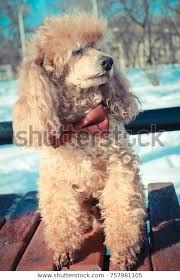
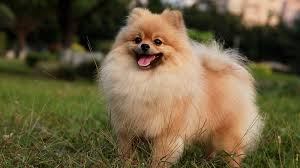
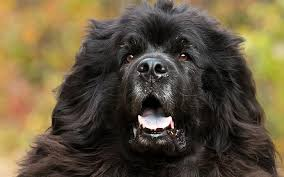
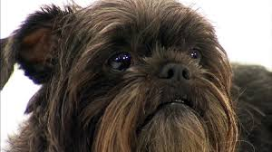

25 All Time Best Types of Dog Breeds with Pictures
Types of Dogs List:
1. German Shepherd: German Shepherd got originated from Germany. This is a new breed of dog that originated in the year 1899. These are called as working dogs which are developed for herding sheep. A German dog has a lot of strength, obedient, intelligent and very well trained. It is called a second-most popular breed of dog in the United States and fourth-most popular in the United Kingdom.

The breed height starts at 60-65 cm for males and for females height was 55-60 cm. They mostly observe in tan/black and red/black. They have double coat. Outer coat sheds all round and thick undercoat is very densed. Life span of German Shepherd is 10.5 years.

2. Bull Dog


Country of origin of a bulldog is from England and the United Kingdom. Bulldogs are even called British Bulldog and English bulldog. The average life span of a bulldog is 07 to 10 years. They have very small nasal cavities and are sensitive to heat. Its height is about 12-16 inches. Weight of male ranges from 53-55 pounds and females 49-51 pounds. These types of dogs are grown as pets. They need exercise like other dogs.
3. Golden Retriever:

Golden retriever is originated from Scotland, United Kingdom and England. It is very reliable, trustworthy, kind and intelligent. Its height is for female varies from 55-57cm and male 58-61cm. Weight of male 29.5-34 kg and for female 25-32 kg. These are used as guide dogs. Life span is about 11-12 years.

4. Poodle:
These are mostly seen in France and Germany. It is very active, alert, intelligent, faithful and even trained. Height ranges from 35-45cm. It is water type dog. Poodles worn Best in show in 1966 and 1982 and even awarded. These types of pet dogs are available in multiple colors. Life span is about 12-15 years.

5. Shih Tzu:

It got originated in china. Other names are Chinese Lion Dog and Chrysanthemum Dog. They are litter in size up to 1-8. Weight for both female and male varies from 8.8-16 lbs. Height also same for both ranges from 7.9-11 inches. It is available in some colors like brindle red, gold etc. These are playful, outgoing, loyal and gentle. Life span of Shi is 10-16 years.
6. Pug Dog:

These are originated in china and when migrated to Europe in sixteenth century it was well popularized. It was developed as passion by Queen Victoria in 19th century. Likewise it was passed to royal family. These types(1) of dogs are strong and aggressive and suitable to grow at houses. These have lazy nature. Its height is of 30cm. Life span is of 12-15 years..
7. English Mastiff:

These dogs breed are originated from England. It is even called as Mastiff or Old English Ma tiff. Its coat is fine and smooth. These are calm, dignified, affectionate, courageous and protective. Height varies in between 70-91cm for both female and male. Weight of male is greater than female. Life span is about 10-12 years.
8. Border Collie:

Border Collie is developed for herding livestock of sheep at boarders. These are acrobatic, energetic, athletic and smart. These are well known as Scottish sheep dog. Death occurs due to cancer, old age and cerebral vascular afflictions. On an average life span is of 13-16 years. Size of male in height 48-56cm and weighs about 13.6-20.4kg. In terms of female height is 46-53cm and weight is 12.2-19 kg.
9. English Cocker Spaniel:

It was originated in England. Also known as Cocker spaniel. It even called by pet names like Cocker and Cocker spaniel. It is active sporting dog with good-natured. Cockers can be along with children, people and other pets and dogs. This is not best suited for backyard alone. Height varies between 38-43cm and in weight about 13-16 kg for male. In female weight ranges between 12-15 kg and height of 36-41cm. Life span is of 12-15 years.
10. Pomeranian:
Pomeranian is named after region Pomeranian in central Europe. It is also called as Deutscher Sptiz. Pet names are pompom, pom and tumbleweed. These became popular by royal owners since the 18th century. It is a breed dog of sptiz type. It is in very small size. Its height of about 20cm and mass of body ranges between 1.9-3.5 kg. These type of dog breed is very playful, active, intelligent, extroverted, sociable and friendly. Life span is of 12-16 years.
11. Australian Cattle Dog:

As the name suggests it got originated in Australia. It has multiple names like blue heeler, red heeler, cattle dog and Queensland heeler. It weights about 15-22 kg for both male and female. Height varies from 46-51cm for male and 43-48cm for female. It has a short and double coat. and It can be seen in blue and red varieties of colours. It is known as a “wash and wear” dog. and also groomed and trained. Life span is of 11.7 years.
12. Bull Terrier:

It got originated from England. Other names are Bully Gladiator and English Bull Terrier. These are both independent and stubborn. Its height is 45-55cm and weight 22-38 kg for the male. Its coat is short and dense. It is variable in multi colours like white, fawn brindle and white etc. These may injure or kill other pet animals. The life span of this dog lies in between 10-15 years.
13. Boston Terrier:

Boston terrier got originated from the United States. Other names are Boston Bull, Boston Bull Terrier, Boxwood and American Gentlemen. These are short and compact with a short tail and erect ears. These are ranked as 23rd most popular pure-breed in the United States in 2012 and 2013. Its coat is short, slick and smooth. Its height is 9-15 inches and litter size is about 1-6 puppies. Life span is of 11-13 Years.
14. Chow Chow:

This breed got originated in china and now known as “Fluffy Lion-dog”. Other names are Tang Quan and Dog of the Tang Quan. These dogs are found as guardians in front of Buddhist temples and places. These are mostly kept as pets. These are loyal, independent, quiet and aloof. Its coat will be thick and coarse. Height is common for both male and female that is 17- 20 inches. Weight for the male is 55-70 pounds and for females 45-60 pounds. Its litter size is 3-6. Life span varies from 9-15 years.
15. Newfoundland:
Newfoundland got originated from England. It is a large working dog. These are found in black, brown, grey and land seer. These dogs worked for fishermen. These are well known for tremendous strength, giant size and loyalty. Nicknames are Newf and Newfie. Height and weight for male are 75cm and 60-70 kg. Height and weight for female are 68cm and 45-55 kg. Its coat is thick and straight. Size of litter is 4-12 pups. this dog type is available in all colours like brown, black and beige etc. Life span is of 8-12 years.
16. Basset Hound:

It got originated from France and Great Britain. This is short-legged breed dog of the hound family. Its nicknames are basset and hush puppies. Weight of male is 55-75 pounds and female 45-65 pounds. Height of male is 12-15 inches and female 11-14 inches. Their sense works very well for a bloodhound. These are usually bicolours and tricolours. Its coat is smooth, close and smooth. Litter size is 6-8 puppies. Life span is of about 11-12 year. These are devoted, tenacious, gentle, affectionate and sweet-tempered.
17. English Springer Spaniel:

TEnglish Springer spaniel belongs to the family of Spaniel. It is used for flushing and retrieving game. It’s very a very affectionate, excitable breed. and It is very alert, active, intelligent, cheerful and attentive. Weight of female is 18.1-22.7 kg, and male weight is 20.4-25 kg. Height of male is 48-56cm and female height is 46-51cm. The life span of this dog is 12-14 years.
18. Alaskan Malamute:

It got originated from the United States Alaska. It is a large breed of domestic dog. Its haul is very freight because of this strength and endurance. Weight of the male is 55 kg, and the female is 38 kg. Height of the female is 61cm and male 70cm. Its coat is thicker and double coat with plush undercoat. It is generally seen in grey, sable, black or red and white. Size of litter is 4-10 puppies. The life span of this breed dog is up to 16 years.
19. St. Bernard:

It got originated from Italy and Switzerland. Other names are St.Bernhardshund, Alpine Mastiff and Bernhardiner. It has a nick name saint. Average weight of breed lies between 65-120 kg and height is 70-90 cm. The coat is smoother and rough. It is gentle, calm and friendly. Life span is of about 8-10 years.
20. Miniature Schnauzer:

This type of dog belongs to small dog and got originated from Germany. Other name is Zwergschnauzer. Its weight is about 11-18 for males and 10-15 for females. It height is 14 inches for male and 13 inches for female. Its coat is harsh and wiry when and stripped. It exists in black, silver, white etc. Litter size is 3-8 pups. Life span is of 12-14 years.
21. German Shorthaired Pointer:

This one is originated in Germany. It is a medium sized type dog which was developed in the 19th century for hunting. And It has powerful and strong legs which can move rapidly and turn quickly. It is bold, intelligent, cooperative, trainable and affectionate. Its height is about 62-66cm for male and 58-63 for female. Weight for the female is 20.4-27.2 kg and 24.9-31Kg for male. Life span is of 12-14 years.
22. American Eskimo Dog:

This dog got originated from Germany. It is a breed of comparion dog and family member of Spitz. It is a toy size dog type. Its height is of 23-30 cm, and mass of the dog is 2.7-4.5kg. It is reserved, alert, intelligent, protective and friendly. The life span of this dog is 13-15 years.
23. Bernese Mountain Dog:

This is called as German Berner Sennenund. It is a larger-sized breed of dog and very loyal, faithful, affectionate and intelligent. Male height is 64-70cm and female height is 58-66cm. Weight of female is 36-48kg and for male 39-50 kg. Size of litter is 5-7 up to 15. Life span is of 7-8 years.
24. Airedale Terrier:

It got originated from the United Kingdom. Other names are a waterside terrier, bingley terrier. Its nicknames are Airedale and king of terriers. It is used for hunt otters, war dog, police dog and guide dog. Weight of male is 50-60 pounds and female weight is 40-45 pounds. Its height is about 22-24 inches for a male and 22-23 inches for a female. Its coat is broken. Size of litter is of 9 cups. Life span is of 11.5 years.
25. Affenpinscher:
This type breed of the dog got originated from Germany. Its nicknames are affen, monkey dog and affie. This Dog belongs to the 17th century. smaller in size of about 12-13 inches and comes in fawn, grey, red and also in black and tan colour. It was created to remove rodents from stables, granaries and kitchens. and It is playful, fun-loving, stubborn, curious and active. Its height is about 23-30 cm. Life span is of 12-14 years.